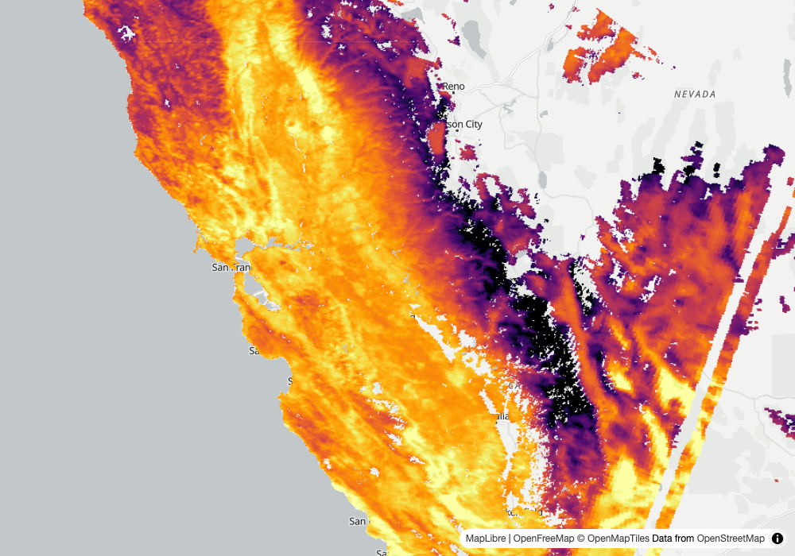
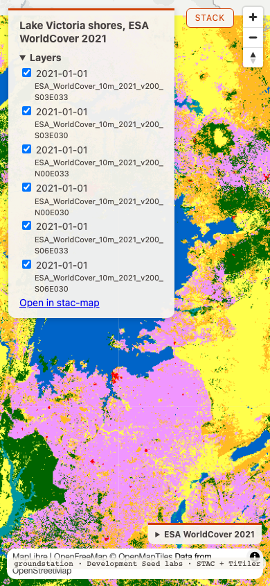
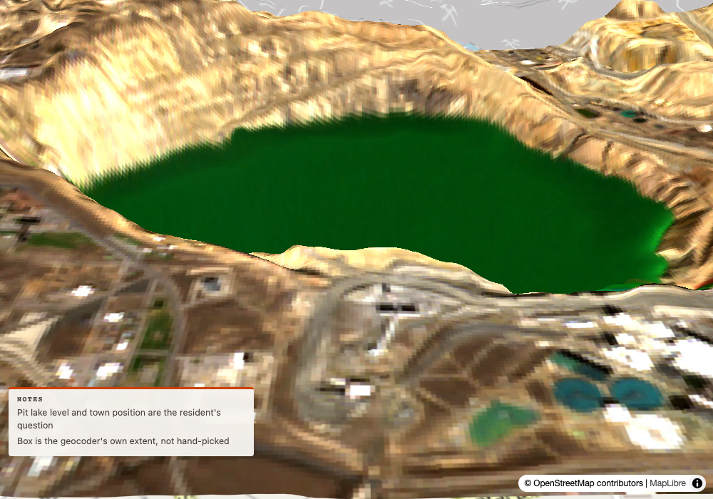
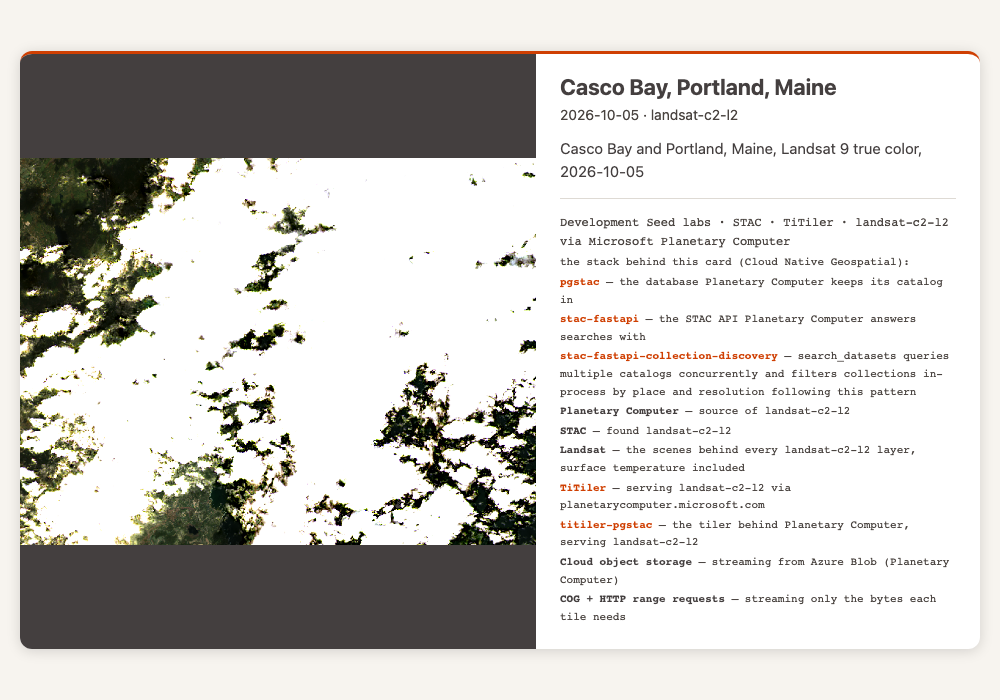
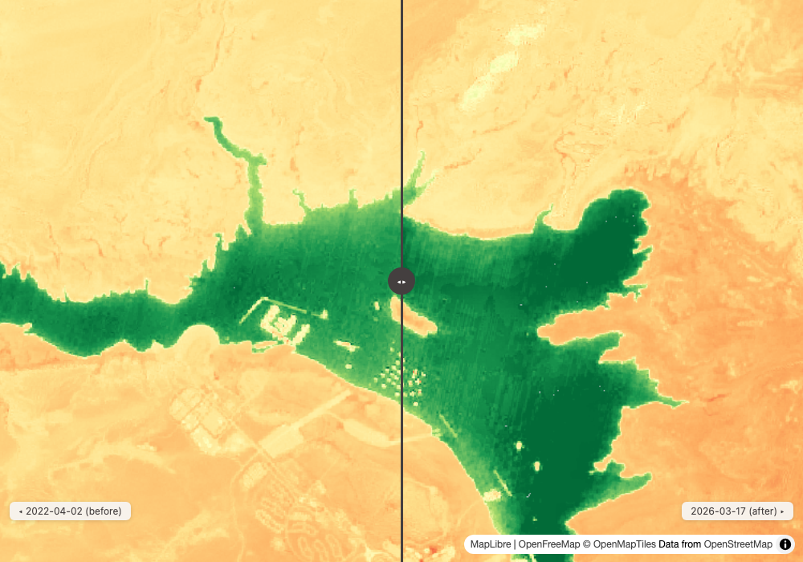
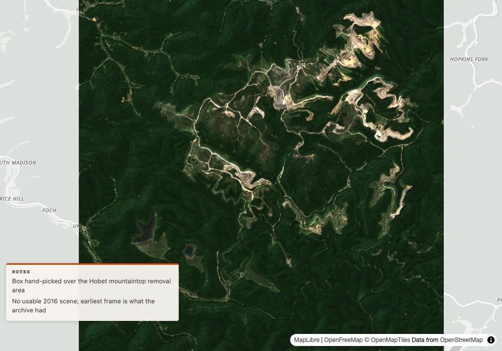

Round 1: the numbers under the picture (stops 23 and 24)
1
claims on the stack
insurance catastrophe adjuster
Input
Rolling Fork, Mississippi was hit by the March 24, 2023 tornado. Show me before and after, and tell me what data this came from.
Our read
Rolling Fork gives the same NDVI as field test 15, 0.198 before and 0.2274 after (delta 0.0294), and this time the 46% cloud on the before scene is named by scene id. The data behind the picture is Sentinel-2 L2A tile 15SXS, S2A_15SXS_20230219_0_L2A before (cloud 45.558468) and S2B_15SXS_20230326_0_L2A after (cloud 0.767861, 2 days after the tornado). Scaling was on by default and the means did not move, because a normalized difference is a ratio and Earth Search already has the -0.1 offset in its pixels. The adjuster's 2 notes are on the page 2 times each. An NDVI mean over the whole box still says nothing about the damage track. swipe: Rolling Fork NDVI with the adjuster's notes ↗
swipe: Rolling Fork NDVI with the adjuster's notes ↗
show the data
compare_dates(bbox=[-90.95, 32.86, -90.8, 32.96], window_before="2023-02-15T00:00:00Z/2023-03-23T23:59:59Z", window_after="2023-03-25T00:00:00Z/2023-04-01T23:59:59Z", max_cloud_cover=50, label="Rolling Fork NDVI", stack_facts={"geocoded": "nominatim", "adjuster": "claim file RF-2023-0324"}, out_path="docs/img/ft16-place-rolling-fork.html", notes=["Claim event: EF4 tornado, 2023-03-24, NWS Jackson", "Track hand-drawn from the damage survey, not from this imagery"])
tile: 15SXS
after: S2B_15SXS_20230326_0_L2A 2023-03-26 cloud 0.767861 mean 0.2274 covers_aoi_pct 100.0
runner_up: S2B_15SYS_20230326_0_L2A 2023-03-26 cloud 7.874347 covers_aoi_pct 41.1
before: S2A_15SXS_20230219_0_L2A 2023-02-19 cloud 45.558468 mean 0.198 covers_aoi_pct 100.0
runner_up: S2A_15SYS_20230219_0_L2A 2023-02-19 cloud 13.800161 covers_aoi_pct 41.1
delta: 0.0294 delta_pct: 14.8 expression: (nir-red)/(nir+red)
clipped_to: [-90.95, 32.86, -90.8, 32.96]
scaling_applied: true (no scaling_note, and no scale or offset values in this result)
caveat: ["cloud may be driving this delta (before scene S2A_15SXS_20230219_0_L2A 46%, threshold 20%). Cloud pushes a normalized index toward zero."]
notes: ["Claim event: EF4 tornado, 2023-03-24, NWS Jackson", "Track hand-drawn from the damage survey, not from this imagery"]
stack_facts_ignored: ["geocoded", "adjuster"]
note: stack_facts takes provenance flags only (events, weather, passes, terrain, snapshot; geocoded is kept only for a bbox geocode returned, with the source it returned); put free text in notes
same call again with apply_scaling=False, out_path="docs/img/ft16-rolling-fork-raw.html":
after mean 0.2274 before mean 0.198 delta 0.0294 delta_pct 14.8 (identical to the scaled run)
scaling_note: "values are raw digital numbers: the item's raster:bands give scale 0.0001 and offset 0 on 24 bands (physical = raw * scale + offset), and nothing here applies them; with an expression a non-zero offset shifts the index too (the declared offset -0.1 is already in the pixels)"
caveat, notes and stack_facts_ignored: same as the scaled run
compute_statistics("earth-search", "sentinel-2-l2a", "S2B_15SXS_20230326_0_L2A", expression="(nir-red)/(nir+red)", bbox=[-90.95, 32.86, -90.8, 32.96]) (one extra look, scaled by default)
mean 0.2274188164706203 scaling_applied: true
band_scaling: scale 0.0001, offset 0, declared_offset -0.1 on 24 bands (blue, green, nir, nir08, red, and others); scale 0.001 offset 0 on aot; scale 0.001 offset 0 unit cm on wvp
compare_dates(... same call, out_path="/Users/Danny/ft16-outside.html")
{"error": "out_path must sit under GROUNDSTATION_OUT or a repository checkout you are working in"}
no KeyError; file /Users/Danny/ft16-outside.html was not written (checked, nothing to delete)
grep -o count of docs/img/ft16-place-rolling-fork.html, per note string (neither string has an apostrophe):
"Claim event: EF4 tornado, 2023-03-24, NWS Jackson": 2
"Track hand-drawn from the damage survey, not from this imagery": 2
Learning → Partly. Field test 15 said the result "also says the means are raw digital numbers with the offset not applied", and stop 23 promised compare_dates would return values "with scaling_applied true and the factors named". Field test 15 also said "Now
notes reaches the page (2 matches per string) and the bogus adjuster key is returned as stack_facts_ignored". Now the notes still match 2 times per string, adjuster still comes back named, the caveat names scene S2A_15SXS_20230219_0_L2A at 46% against a 20% threshold, and the caller-passed geocoded: "nominatim" for a hand-picked box comes back in stack_facts_ignored beside adjuster. The raw scaling_note is gone from the default run and scaling_applied is true. The out_path outside the repo now returns an error dict of its own, where field test 15's flood card got an uncaught KeyError: 'map_path'; here there is no KeyError and no file was written. Why Partly: this is stop 23 half done, not a new break. Scaling is applied, but the factors are not named in the default compare_dates result, which only says scaling_applied: true; the scale 0.0001 and the offset story appear in the apply_scaling=False scaling_note and in compute_statistics band_scaling (which I ran once on the after scene), not in the default compare_dates answer. The raw note says "the declared offset -0.1 is already in the pixels", which is why the means could not move. The raw and scaled means are identical to 4 places, so for this index the correction changes nothing a reader could see, which means this card cannot show scaling working on a number. Not checked: whether the Stack panel on the page still credits Nominatim after geocoded was ignored, a scaled non-ratio expression, and any other place.stop 23 scaling_applied and raw run beside it · stop 21 cloud caveat names the scene id · geocoded in stack_facts_ignored · adjuster still named · notes 2 matches each · out_path outside the repo returns an error dict
2
find lst data
public health researcher
Input
What datasets do you have for land surface temperature over California's Central Valley, and can you show one?
Our read
With no rescale given, render_map worked out its own stretch, 13682 to 14788 for both tiles, and the Valley reads clearly with no hand range. Both layers in state.layers carry rescale_used: 13682,14788 with the basis "2nd to 98th percentile of the raw values over the box, widest of 2 scenes", so the two tiles share one range. Valley floor is light yellow to orange, the foothills orange to purple, the high Sierra black. The white patches in the Valley and the south are pixels flagged not produced, most of them cloud: in h08v05 every nodata pixel in the box (57280 of 216568) is flagged not produced, 33482 of them as cloud (QC 2), and the cloud share climbs from 4% at -120.50 to -120.12 to 49% at -118.98 to -118.60. The other 23798 are QC 3 along the west edge. The east-edge stripe I could not pin down: it lies east of the box, row reads show cloud runs with valid pixels on both sides so it is not a tile edge, but I did not match it pixel for pixel.
map: Central Valley land surface temperature, MODIS 2026-10-24, stretch from the data ↗show the data
search_imagery("planetary-computer", ["modis-11A1-061"], bbox=[-122.4, 35.0, -118.6, 40.4], datetime_range="2026-10-20T00:00:00Z/2026-10-26T23:59:59Z", limit=10)
count: 10
recommended: {"id": "MOD11A1.A2026297.h08v05.061.2026298094323", "scene_ids": ["MOD11A1.A2026297.h08v05.061.2026298094323", "MOD11A1.A2026297.h08v04.061.2026298094315"], "covers_aoi_pct": 99.9, "cloud_cover": 28, "reason": "no single scene covers this area; these 2 from 2026-10-24 together cover 99.9% of it (full_coverage_set). The best single scene covers 92.0%"}
MOD11A1.A2026297.h08v05.061.2026298094323 2026-10-24 cloud 28 covers_aoi_pct 92.0 coverage_basis footprint
MOD11A1.A2026297.h08v04.061.2026298094315 2026-10-24 cloud 1 covers_aoi_pct 7.8 coverage_basis footprint
MOD11A1.A2026297.h07v05.061.2026298094307 2026-10-24 cloud 0 covers_aoi_pct 0.1 coverage_basis footprint
[rows 4 to 10: 2026-10-23 and 2026-10-22 scenes, same footprint figures 92.0 / 7.8 / 0.1]
full_coverage_set: date 2026-10-24, union_covers_aoi_pct 99.9, items [h08v05 ...298094323, h08v04 ...298094315]
render_map("Central Valley land surface temperature, MODIS 2026-10-24 (recommended set)", bbox=[-122.4, 35.0, -118.6, 40.4], [coverage_set layer from full_coverage_set, name "LST day", assets ["LST_Day_1km"], colormap_name "inferno"; NO rescale given], out_path="docs/img/ft16-find-lst-data.html")
map_path: docs/img/ft16-find-lst-data.html
layers: ["LST day · MOD11A1.A2026297.h08v05.061.2026298094323", "LST day · MOD11A1.A2026297.h08v04.061.2026298094315"]
state.coverage_pct: 99.9
state.layers[0].rescale_used: 13682,14788
state.layers[0].rescale_basis: 2nd to 98th percentile of the raw values over the box, widest of 2 scenes
state.layers[1].rescale_used: 13682,14788
state.layers[1].rescale_basis: 2nd to 98th percentile of the raw values over the box, widest of 2 scenes
both tile URLs carry rescale=13682%2C14788 and colormap_name=inferno; no top-level rescale_used key in the result, it sits per layer in state.layers
[field test 15 used a hand range, 13500,15500]
Snapshot 1000 x 700: docs/img/ft16-find-lst-data.png (same framing as field test 15's still). Read by eye: Valley floor light yellow to orange, Sierra foothills orange to purple, high Sierra black, Pacific and Nevada basemap grey with no data drawn over it.
White patches and east stripe, read from the data (rasterio on the signed COGs, LST_Day_1km nodata 0, QC_Day bits 0 to 1: 0 good, 1 other quality, 2 not produced cloud, 3 not produced other):
h08v05 inside the box: 216568 pixels, LST==0 on 57280 (26.4%)
QC 0 good 126161 (LST==0 on 0); QC 1 other quality 33127 (LST==0 on 0)
QC 2 cloud 33482 (LST==0 on all 33482); QC 3 other 23798 (LST==0 on all 23798)
every LST==0 pixel carries QC 2 or 3; none carries QC 0 or 1
nodata by longitude band: QC 3 is 46% at -122.40 to -122.02 falling to 0% by -120.50 (west edge); QC 2 is 4% at -120.50 to -120.12, 20% at -120.12 to -119.74, 32%, 42%, 49% at -118.98 to -118.60
h08v04 inside the box: 17065 pixels, LST==0 on 8247 (48.3%), all 8247 QC 2 cloud, 94% to 100% nodata east of -120.12
stripe: east of the box (box ends at -118.6), so not in the counts above. Row reads on h08v05 at 36.0 N and 37.0 N show runs of QC 2 pixels with valid pixels on both sides (36.0 N: QC 2 near -117.14 to -116.78, valid again by -115.06; valid pixels continue east to at least -111.77). I did not trace a pixel on the screen to a pixel in the file, so the stripe is not tied to a specific run.
tile footprint h08v05 bbox from the item: [-130.540729, 30.0, -103.923048, 40.0]
Learning → Fixed. Field test 15 said: "the stretch I first copied from field test 14's tile_url_template call (14500 to 16000; field test 14 drew no map) drew nearly all the land black in late October, so I re-rendered with 13500 to 15500". This round no range was passed, and the map came back with a stretch from the data, 13682 to 14788, its basis named, one range for both tiles. The picture is legible at 1000 by 700 and a little hotter in colour than field test 15's hand range, because the data range is narrower (the Valley floor sits near the top of the ramp). Field test 15 also noticed white patches and a white east stripe that no reviewer had opened. The patches are pixels that QC_Day marks as not produced: in h08v05, 33482 for cloud (QC 2) and 23798 for other reasons (QC 3) toward the west edge, on a scene the search already gave as 28% cloud. The stripe is still there in the still and I could not say what it is. Stumbles that remain: the result has no top-level
rescale_used, it sits in each layer under state.layers; the recommended h08v05 scene is still the 28% cloud one, and the cloud holes are in the Valley's south and east where a public health reader would look. Not checked: whether a caller-given rescale is used as given, whether a categorical colormap is left alone, other dates, and how many Valley pixels exceed 14788 and clip to the top colour.stretch from the data when none is given (stop 24) · rescale_used and basis per layer · one range for 2 tiles · QC_Day read for the white patches · MODIS LST
Round 2: the page at phone width, and in 3D (stops 25 and 26)
3
legend at phone width
geographer
Input
Land cover around the shores of Lake Victoria, with a legend.
Our read
The page does most of what stop 25 promised at 390 px, but the call that builds it fails today with KeyError 'id', so a user would not get this map at all. The call fails inside _pc_mosaic_id because Planetary Computer's register endpoint now returns searchid for esa-worldcover and the code reads id; I built the page with a patch in my own script and left the repo alone. On that page the layers panel is folded at 390 px (a 240 by 113.1 box) and opens on a tap to 240 by 446.1. Each layer reads "2021-01-01" with its tile id under it, six rows, no longer the 40% of the screen that field test 15 saw at rest. STACK sits to the right of the title, 16.8 px clear of the panel and 32.8 px clear of the title text. New look: at 390 px the Development Seed credit (top 803, bottom 820) sits inside the attribution bar (top 790, bottom 834) and covers its second line. At 1280 px the two do not touch.
map: Lake Victoria, ESA WorldCover 2021, with legend (built with a local patch, see card) ↗show the data
search_imagery("planetary-computer", ["esa-worldcover"], bbox=[31.6, -3.1, 34.9, 0.6], datetime_range="2021-01-01T00:00:00Z/2021-12-31T23:59:59Z", limit=10)
count: 6 recommended: 6 scene_ids from 2021-01-01, covers_aoi_pct 100.0 (best single scene covers 47.0%)
full_coverage_set: date 2021-01-01, union_covers_aoi_pct 100.0
render_map("Lake Victoria shores, ESA WorldCover 2021", bbox=[31.6, -3.1, 34.9, 0.6], [coverage_set layer, assets ["map"], colormap_name "esa-worldcover"], out_path="docs/img/ft16-victoria-landcover.html")
AS SHIPPED, THE CALL FAILS: KeyError: 'id'
tools.py _pc_mosaic_id: r.json()["id"]. Planetary Computer's register endpoint now answers for esa-worldcover with {"searchid": "pc1..", "links": [...]} and no "id" key. Repeated 8 times over about 10 minutes, same answer each time; modis-11A1-061 and sentinel-2-l2a still answer with "id" in the same session. The code catches httpx.HTTPError only, so the KeyError ends the render and the item-tile fallback is never reached. The pc1 search id does serve tiles (mosaic//tiles/WebMercatorQuad/8/151/129 returned 200, 6749 bytes; item path for the same tile returned 200, 6749 bytes).
NOT PLAYED DOWN: the card's artifact below was built with _pc_mosaic_id replaced in my script only, to read searchid when id is absent (src/ untouched). Everything after this line is that patched run, so the page checks are real but the call itself does not work today.
map_path: docs/img/ft16-victoria-landcover.html
layers: ["2021-01-01 · ESA_WorldCover_10m_2021_v200_S03E033", "2021-01-01 · ESA_WorldCover_10m_2021_v200_S03E030", "2021-01-01 · ESA_WorldCover_10m_2021_v200_N00E033", "2021-01-01 · ESA_WorldCover_10m_2021_v200_N00E030", "2021-01-01 · ESA_WorldCover_10m_2021_v200_S06E033", "2021-01-01 · ESA_WorldCover_10m_2021_v200_S06E030"]
state.layers name / detail: name "2021-01-01", detail "ESA_WorldCover_10m_2021_v200_S03E033" (and the same for the other 5 tiles); no layer name was passed
legend: title "ESA WorldCover 2021", 11 classes (10 Tree cover ... 100 Moss and lichen)
Playwright, headless Chromium, 6 s load plus 1 s after tap, 390 x 844:
details.fold (Layers) open on load: False; after a tap on its summary: True
panel closed: left 12, top 12, right 252, bottom 125.1 (240 x 113.1)
panel open: left 12, top 12, right 252, bottom 458.1 (240 x 446.1); #toggles 208 x 329, six checkboxes, each date line plus the tile id wrapped to 2 lines
panel h1 (title): left 28, top 27, right 236, bottom 64.5 (2 lines)
STACK button: left 268.8, top 12, right 338, bottom 40 (69.2 x 28); same in the closed and open states
gap from panel right edge (252) to STACK left edge (268.8): 16.8 px; gap from title right edge (236) to STACK left edge: 32.8 px
legend (details.legend) closed at 390: left 214.3, top 752.8, right 378, bottom 784 (163.7 x 31.2)
#credit (Development Seed credit): left 12, top 803, right 384.5, bottom 820 (372.5 x 17)
.maplibregl-ctrl-attrib (map attribution bar): left 10, top 790, right 380, bottom 834 (370 x 44)
credit inside the attribution box on both axes: overlap about 368 px wide by 17 px tall; on the picture the credit sits across the attribution's second line ("OpenStreetMap")
1280 x 800:
panel open on load, left 12, top 12, right 360.5, bottom 343.8; STACK left 1158.8, top 12, right 1228, bottom 40
#credit left 12, top 759, right 384.5, bottom 776; attribution bar left 857.8, top 766, right 1270, bottom 790 (no overlap)
layer rows read "2021-01-01" with the tile id under it
screenshots: docs/img/ft16-victoria-layers-390.png, docs/img/ft16-victoria-layers-390-open.png, docs/img/ft16-victoria-layers-1280.png
Learning → Partly. Field test 15 said: "the 6 layer checkboxes are now named by tile ... so the layer panel fills the top 40% of the screen and covers the north of the lake, and the STACK button still sits on its title." On the page now, the panel is folded at load at 390 px and opens on a tap (
details.fold false, then true), STACK is clear of the title, and the layer list and tool result keep the tile id beside a shared name. Two things do not match the promise or the old picture. The layer name is the date alone, "2021-01-01", not the collection plus date that stop 25 promised: with no name passed, a coverage_set layer falls back to its date, and stop 25's own check passed the name "WorldCover 2021" by hand. Field test 15's call passed no name either. That part is the old thing not fully fixed. The other is a new break, not stop 25 unfixed: the call itself fails as shipped with KeyError 'id' from the mosaic register answer, so the page on this card came from a call patched in my own script, not from 0.47.0 as shipped. It breaks this card's prompt today, and it looks like the same trap field test 8 guarded for slow registrations, only for a changed reply and not a slow one. Opened, the panel is 446.1 px tall of 844 and covers the north of the lake until closed, by choice now. Course candidates: read searchid or fall back to item tiles when id is absent; the Development Seed credit overlapping the attribution bar at 390 px (measured from the DOM). Not checked: other phone widths, a name passed in the layer, whether the failure hits other collections, and the page on a real phone.layer panel folded at 390 px and opened on a tap (stop 25) · STACK clear of the title · ids beside the shared name · mosaic register reply without id · credit over attribution at 390 px
4
superfund pit 3d
Superfund community liaison, Butte
Input
Give me a 3D view of the Berkeley Pit so residents can see how the pit lake sits relative to town.
Our read
The 3D view over the geocoder's own tight box, 0.0245 by 0.0127 degrees, now draws: the pit lake sits inside its walls with the town's streets and tailings ponds in front. Field test 15 got a white canvas from the same call. The result returns no camera, zoom or elevation field, only coverage_pct 100.0, and the page source carries pitch: 60 and freezeElevation: true. The plain basemap under the pit in the stop 26 still is not where the imagery ends: the draped scene's footprint contains the whole box (fraction inside 1.0, nearest edge 0.0183 degrees away), but the layer's bounds are the box itself, so the imagery is cut at the box edge and OpenStreetMap shows beyond it. The view still frames the pit more than the town and says nothing about the lake's level.
3D map: Berkeley Pit, the geocoder's own box ↗show the data
geocode("Berkeley Pit, Butte, Montana")
source: nominatim name: Berkeley Pit, Butte, Silver Bow County, Montana, United States
bbox: [-112.5235427, 46.0107713, -112.4990514, 46.0234592]
candidate: kind water, extent [0.0245, 0.0127], importance 0.353, score 0.466, extent_basis own
[top-level bbox is 0.0245 by 0.0127 degrees, about 1.9 by 1.4 km]
search_imagery("earth-search", ["sentinel-2-l2a"], bbox=, datetime_range="2026-10-01T00:00:00Z/2026-10-26T23:59:59Z", max_cloud_cover=10, limit=8)
recommended: S2A_12TUR_20261016_0_L2A cloud 0.087828 covers_aoi_pct 100.0
reason: clearest (0.1% cloud) and best-covering (100.0% of the area), not a tradeoff
render_map_3d("Berkeley Pit and Butte, 3D", bbox=, layer={"type": "item", "catalog": "earth-search", "collection_id": "sentinel-2-l2a", "item_id": "S2A_12TUR_20261016_0_L2A", "assets": ["visual"], "bbox": }, subtitle="Sentinel-2 true colour, 2026-10-16, terrain x2.0, the geocoder's own box", exaggeration=2.0, stack_facts={"geocoded": "nominatim"}, notes=["Pit lake level and town position are the resident's question", "Box is the geocoder's own extent, not hand-picked"], out_path="docs/img/ft16-mine-berkeley3d-tight.html")
result keys: path, title, state, notes
state keys: bbox, exaggeration 2.0, terrain true, layers, coverage_pct 100.0
state.bbox: [-112.5235427, 46.0107713, -112.4990514, 46.0234592]
state.layers[0].bounds: [-112.5235427, 46.0107713, -112.4990514, 46.0234592] (the box, not the scene)
no camera, zoom or elevation field in the result
in the HTML source: pitch: 60, freezeElevation: true; the zoom is not in the source as a number and I did not read it from the live map
notes in the HTML, matches per string: 2 and 2
footprint check: item S2A_12TUR_20261016_0_L2A footprint polygon, shapely against the box
footprint spans lon -113.584 to -112.157, lat 45.038 to 46.048
fraction of the box inside the footprint: 1.0 footprint contains the box: True
nearest footprint edge to the box: 0.0183 degrees (about 2 km), on the north side
snapshot through the harbor, _snapshot_artifact at 1000 by 700: docs/img/ft16-mine-berkeley3d-tight.png (756138 bytes)
by eye: the pit lake draws, green, inside the pit walls, with the town streets and the tailings ponds in the foreground; no white canvas
compared with docs/img/stop26-berkeley-pit-3d-tight.png: same pit and lake; in the stop 26 still the imagery ends at a straight line and plain OpenStreetMap shows below it
the control panel (title, slider, Fly through, Reset) and the STACK button are in the HTML (Fly through: 2 matches) but not in this still
Learning → Fixed. Field test 15 said: "the map is white at zoom 14.5, pitch 60, even though the tiles answer 200 under curl", and stop 26 traced it to MapLibre's load ease freezing the camera's ground height at 0 m. Now the same call over the same tight box, rendered with
freezeElevation: true in the page, draws the pit and the terrain by eye in a 1000 by 700 snapshot. Stop 26's plan asked for zoom_used and a zoom cap in the result; the fix that landed was the camera's ground height, not the zoom, and the result carries no zoom field. The stumbles that remain: the result has no camera, zoom or elevation field, so the fix can only be seen in a screenshot, and I did not read the live zoom; the control panel and STACK button exist in the HTML but are missing from this still, which I did not chase; the imagery stops at the box edge by design of the layer bounds, so a resident sees plain map past the box edge, which is a framing choice and not a data gap; and the lake's level and water quality are still not shown. I did one headless render through the harbor, not a real desktop browser, and did not compare other boxes or zoom levels.tight-box 3D draws (stop 26) · freezeElevation in the page · footprint covers the box 100% · layer bounds equal the box · result carries no camera fields
Round 3: one scene, one box (stops 22 and 27)
5
which portland
harbor pilot
Input
Show me the harbor approaches at Portland from the latest Landsat pass.
Our read
A bare "Portland" now lists 4 candidates, all named Portland, with the state in the note, and the Casco Bay recommendation is a scene that covers 100.0% of the box, so the card has no wedge to print. The refusal names Oregon (an urban centre and a locality) and Maine (a locality and an urban centre) and the Guadeloupe row is gone. For Casco Bay the recommended scene is LC09_L2SP_012030_20261005_02_T1 (15.28% cloud), chosen because it covers 100.0% while the clearest scene (0.33% cloud) covers 84.2%. Only 0.0405 of its pixels are near-black, against 0.3372 in field test 15. The newest 100% scene is the 2026-10-21 one at 23.01% cloud, and the pick is 16 days older than it. The output does not say why that newer scene lost: the reason string only compares the pick with the clearest scene. Rendering the old 66.6% scene on purpose shows the other branch: its card caption now reads "31.6% of the box uncovered, mostly south", with coverage_pct 68.4 in the result.
postcard: Casco Bay, Landsat 9, 2026-10-05, 100.0% covered ↗show the data
geocode("Portland")
source: gazet name: Portland (United States, urban_centre) ambiguous: true
candidates (4):
Portland (United States, urban_centre) Oregon, United States urban_centre score 0.099 extent_basis own
Portland (US, locality) Oregon, United States locality score 0.085 extent_basis own
Portland (US, locality) Maine, United States locality score 0.084 extent_basis own
Portland (United States, urban_centre) Maine, United States urban_centre score 0.057 extent_basis own
geocode_note: 4 places match 'Portland' equally well; using Portland (Oregon, United States, urban_centre) (best score), not Portland (Oregon, United States, locality), Portland (Maine, United States, locality), Portland (Maine, United States, urban_centre). Pass the fuller name if another was meant. ambiguous: pass the fuller name or a bbox
search_imagery("planetary-computer", ["landsat-c2-l2"], place="Portland", datetime_range="2026-10-01T00:00:00Z/2026-10-26T23:59:59Z", limit=3)
error: 'Portland' matches more than one place: urban_centre (Oregon, United States) or locality (Oregon, United States) or locality (Maine, United States) or urban_centre (Maine, United States)? Pass a fuller name or a bbox
[no Le Moule, no Guadeloupe in the list; every name in the refusal contains Portland]
geocode("Portland, Maine")
source: nominatim name: Portland, Cumberland County, Maine, United States
bbox: [-70.3473997, 43.5443477, -69.9758509, 43.7276965] kind city score 0.688 extent_basis own
(field test 15 used the Casco Bay box casco = [-70.40, 43.55, -69.90, 43.85] directly, so this run does too)
search_imagery("planetary-computer", ["landsat-c2-l2"], bbox=casco, datetime_range="2026-10-01T00:00:00Z/2026-10-26T23:59:59Z", limit=10)
recommended: LC09_L2SP_012030_20261005_02_T1 cloud 15.28 covers_aoi_pct 100.0
reason: 15.3% cloud but covers 100.0% of the area; the clearest scene (0.3% cloud) covers 84.2%
LC09_L2SP_012030_20261021_02_T1 2026-10-21 cloud 23.01 covers_aoi_pct 100.0
LC09_L2SP_012029_20261021_02_T1 2026-10-21 cloud 2.63 covers_aoi_pct 66.6
LC09_L2SP_011030_20261014_02_T1 2026-10-14 cloud 53.29 covers_aoi_pct 87.0
LC08_L2SP_012030_20261013_02_T2 2026-10-13 cloud 100.0 covers_aoi_pct 100.0
LC08_L2SP_011030_20261006_02_T1 2026-10-06 cloud 0.33 covers_aoi_pct 84.2
LC09_L2SP_012030_20261005_02_T1 2026-10-05 cloud 15.28 covers_aoi_pct 100.0 [other rows omitted]
render_postcard("planetary-computer", "landsat-c2-l2", "LC09_L2SP_012030_20261005_02_T1", "Casco Bay, Portland, Maine", "2026-10-05", assets=["red","green","blue"], rescale="7000,16000", bbox=casco, caption="Casco Bay and Portland, Maine, Landsat 9 true color, 2026-10-05", out_path="docs/img/ft16-which-portland.html")
{"path": "docs/img/ft16-which-portland.html", "coverage_pct": 100.0}
no uncovered_pct, uncovered_side or coverage_note in the result (nothing to warn about)
grep of docs/img/ft16-which-portland.html: uncovered 0, no-data 0, no data 0, 100.0 0, coverage 0
pixel check, PIL on the embedded PNG (1 image, 1024 x 768, 646806 bytes):
pixels with all channels < 12: 0.0405 of the image
pixels exactly (0,0,0): 0.0314
extra check, the field test 15 scene on purpose: render_postcard(... "LC09_L2SP_012029_20261021_02_T1" ..., out_path="docs/img/ft16-which-portland-wedge.html")
{"coverage_pct": 68.4, "uncovered_pct": 31.6, "uncovered_side": "south", "coverage_note": "the scene footprint leaves 32% of the card uncovered, mostly south, printed as black no-data; no same-day sibling fills it: mosaic cards need direct COG access, which planetary-computer does not offer"}
grep of that HTML: uncovered 1, no-data 0, no data 0, 31.6 1, south 1
the card caption now ends: "... Landsat 9 true color, 2026-10-21 · 31.6% of the box uncovered, mostly south"
pixels with all channels < 12: 0.3372 of the image (field test 15: 0.3372); exactly (0,0,0): 0.334
Learning → Fixed. Field test 15 said of the candidate list: "the Guadeloupe candidate is named 'Le Moule (GP, locality)', not Portland", and of the card: "a search of the card HTML for uncovered, no-data and no data finds 0 matches", with
uncovered_pct 31.6, south, and 33.7% near-black pixels. Now the list holds only Portlands and the note spells the states out (Oregon, Maine) instead of coordinates. The recommendation goes through coverage first (100.0% over 84.2%). The wedge now reaches the card: the old scene's caption carries 31.6% uncovered, mostly south, so a reader of the card alone gets a warning; the figures 31.6 and 0.3372 match field test 15 to the digit. Stumbles that remain: the card prints only a caption phrase, not the words no-data (0 matches) and not the coverage figure 68.4, and when coverage is 100.0 it prints nothing about coverage at all (0 matches for uncovered and for 100.0); the pick is not the newest 100% scene, it is the lower-cloud one 16 days earlier, so a pilot asking for the latest pass gets an older one, and nothing in the output says why. Read from the code, not the output: the recommendation keeps scenes within 5 points of the least cloud among the full-coverage ones before it applies the 7-day recency band, so the 23.01% scene drops out at the cloud step (more than 5 points above 15.28) and never reaches the band; the black wedge itself is not filled, and the tool's own note says that needs direct COG access, which planetary-computer does not offer. Not checked: the card by eye, and the geocoded Portland, Maine box against the casco box (they differ; I used casco as field test 15 did).refusal lists only candidates named like the ask (stop 21) · state names in the note · scene key picks 100% coverage (stop 22) · wedge printed on the card caption (stop 22) · pixel check comparable to field test 15
6
powell bathtub ring
river journalist
Input
Lake Powell: show me the low point of 2022 against this year, side by side, and tell me how much more water surface there is now.
Our read
"Wahweap Bay, Utah" now gets a box 4.0 by 4.0 km (0.0450 by 0.0359 degrees) with extent_basis kind, where field test 15 gave the 0.3 degree square, about 33 km across. "Lake Powell" keeps the reservoir's own box (1.1925 by 0.9811 degrees, extent_basis own) and "Lake Powell, Utah" keeps 1.2808 by 1.0650. "Wahweap, Utah" is still ambiguous, creek first at 0.342, bay second at 0.207 with extent_basis kind. On the water question: compare_dates has no water-index parameter, only a free expression, so I passed NDWI as (green-nir)/(green+nir) over the bay box. The mean index went from 0.0622 on 2022-04-02 to 0.0999 on 2026-03-17, a delta of 0.0377. The tool warns that delta_pct (60.6) is unstable at that baseline. That is a change in an average index, not a surface area: I cannot say how much more water there is in square km or percent, and the answer to the journalist is not yet given.
swipe map: Wahweap Bay, NDWI, 2022-04-02 against 2026-03-17 ↗show the data
geocode("Lake Powell") [Gazet]
name: Powell (reservoir) kind reservoir score 0.422 extent_basis own
bbox: [-111.55546361133912, 36.932214624519844, -110.36299453232873, 37.913330260249694]
size: 1.1925 by 0.9811 degrees, 105.4 by 108.5 km
second candidate: Lake Powell (AU, locality) score 0.069 extent_basis own
geocode_note: 2 places match 'Lake Powell' equally well; using Powell at 37.4N 111.0W (best score), not Lake Powell (AU, locality) at 34.7S 142.9E. Pass the fuller name if another was meant
top candidate where: "at 37.4N 111.0W"
geocode("Lake Powell, Utah") [Nominatim]
name: Lake Powell, San Juan County, Utah, United States kind reservoir score 0.859 extent_basis own
bbox: [-111.5674771, 36.8444117, -110.2867168, 37.9093781]
size: 1.2808 by 1.0650 degrees, 113.3 by 117.8 km
geocode("Wahweap Bay, Utah") [Nominatim]
name: Wahweap Bay, Kane County, Utah, United States kind bay score 0.407 extent_basis kind
top-level bbox: [-111.51266012708085, 36.994798876500184, -111.46766027291916, 37.03073132349982]
size: 0.0450 by 0.0359 degrees, 4.0 by 4.0 km
candidate's own bbox: [-111.4902102, 37.0127151, -111.4901102, 37.0128151] (0.0001 degrees)
bbox_note: geocoder returned a point, not an extent (em-dash in the original) widened to 4 km across for a bay around it. Pass your own bbox if the subject is bigger
geocode("Wahweap, Utah") [Nominatim] ambiguous: true
top-level: Wahweap Creek, kind river, score 0.342, extent_basis own, bbox [-111.8191963, 37.035687, -111.5583944, 37.5906179], 0.2608 by 0.5549 degrees, 23.1 by 61.4 km
2nd: Wahweap Bay, kind bay, score 0.207, extent_basis kind (candidate bbox 0.0001 degrees)
3rd: Wahweap Wilderness Study Area, kind nature_reserve, score 0.173, extent_basis own
4th: Wahweap Creek Road, kind track, score 0.122, extent_basis own
geocode_note: matched 'Wahweap, Utah'; other places share it: Wahweap Bay, Utah, United States / Wahweap Wilderness Study Area, Utah, United States / Wahweap Creek Road, Utah, United States. Pass a state or country if another was meant. ambiguous: pass the fuller name or a bbox
compare_dates has no index parameter. Its signature takes expression (default "(nir-red)/(nir+red)"), so NDWI is passed as an expression, Sentinel-2 L2A, scaling applied.
compare_dates(bbox=, window_before="2022-03-15T00:00:00Z/2022-04-30T23:59:59Z", window_after="2026-03-15T00:00:00Z/2026-04-30T23:59:59Z", expression="(green-nir)/(green+nir)", label="Wahweap Bay water surface (NDWI), March-April 2022 vs 2026", out_path="docs/img/ft16-powell-wahweap.html")
tile 12SVF
before: S2A_12SVF_20220402_0_L2A 2022-04-02 cloud 0.033799 mean 0.0622 covers_aoi_pct 100.0
after: S2B_12SVF_20260317_0_L2A 2026-03-17 cloud 0.027306 mean 0.0999 covers_aoi_pct 100.0
delta 0.0377 delta_pct 60.6
caveat: delta_pct is unstable: the baseline mean (0.0622) is near zero, so a small absolute change reads as a large percentage. Trust delta over delta_pct.
map_path: docs/img/ft16-powell-wahweap.html
no water-surface area, no water pixel count in the result
Learning → Fixed. Field test 15 said: "'Wahweap Bay, Utah' resolves to a bay whose own box is 0.0001 degrees, so the top-level box is the 0.3 degree point-rule square around it (about 33 km)", and "I did not run the 2022-versus-now imagery or the water-surface comparison". Now the bay box is 4.0 km across with extent_basis kind and the bbox_note says so, and every padded candidate carries extent_basis (own or kind), which is stop 27 working. Fixed is for what stop 27 promised, the box; the water-surface answer was never a stop promise and is still not given. The water question is run for the first time, with stumbles: the two scenes are 2022-04-02 and 2026-03-17, 16 days apart in the calendar, not the same weeks, because the tool picks by coverage and cloud inside each window; the result is a mean NDWI over the box, which mixes shore and water, so it does not say how much more surface there is; and the swipe map was written but not opened by me. Other stumbles: "Wahweap, Utah" stays ambiguous (reported as returned); the Gazet "Lake Powell" row still gives
where as coordinates and the note still says 2 places match "equally well" at scores 0.422 and 0.069; the Wahweap Bay candidate's own bbox is still the 0.0001 degree point, with the 4 km box only at the top level. Not checked: a true point with unknown kind getting the 0.3 degree square (no query of mine returned one), whether 2022-04 was Powell's actual low, and any water-pixel count.kind-based half-width for a point (stop 27) · extent_basis own and kind on every candidate · Wahweap Bay 4.0 km box · reservoir keeps its own box · NDWI by expression in compare_dates · no surface-area figure
Round 4: the quick fixes (stop 21)
7
notes beside the map
West Virginia state reclamation inspector
Input
Hobet mine in Boone County was supposed to be reclaimed. Is vegetation actually coming back on the old mountaintop removal area since 2016? I want my own note about the hand-picked box printed on the map.
Our read
The inspector's 2 notes are printed on the 5-frame Hobet timelapse 2 times each, and the empty 2016 search now says in its own words that it found 0 scenes at max_cloud_cover 15. The frames are the same 5 Sentinel-2 scenes as field test 15, 2018-09-04 to 2026-07-14. New ground, labelled as such: a wider look at the whole of 2016 at max_cloud_cover 30 also returned count 0, so in this archive, at caps up to 30, the missing 2016 baseline is not just a summer cloud-cap effect. No vegetation index was computed, so whether vegetation is coming back is still a judgement by eye.
timelapse: Hobet mine 2018 to 2026, with the inspector's notes ↗show the data
render_timelapse("Hobet mine, Boone County WV, summer frames 2018 to 2026", bbox=[-81.78, 38.0, -81.66, 38.1], frames=[5 item layers, same ids as field test 15, assets ["visual"]], subtitle="Sentinel-2 true colour, lowest-cloud June-September scene per even year", out_path="docs/img/ft16-place-hobet.html", stack_facts={"geocoded": "nominatim"}, notes=["Box hand-picked over the Hobet mountaintop removal area", "No usable 2016 scene; earliest frame is what the archive had"])
frames (item ids, as field test 15): S2A_17SMC_20180904_0_L2A, S2B_17SMC_20200908_1_L2A, S2B_17SMC_20220630_0_L2A, S2A_17SMC_20240823_0_L2A, S2C_17SMC_20260714_0_L2A
map_path: docs/img/ft16-place-hobet.html frames: 5
notes: ["Box hand-picked over the Hobet mountaintop removal area", "No usable 2016 scene; earliest frame is what the archive had"]
stack_facts_ignored: ["geocoded"]
note: stack_facts takes provenance flags only (events, weather, passes, terrain, snapshot; geocoded is kept only for a bbox geocode returned, with the source it returned); put free text in notes
grep -o count of the HTML, per note string: 2 and 2
search_imagery("earth-search", ["sentinel-2-l2a"], bbox=[-81.78, 38.0, -81.66, 38.1], datetime_range="2016-06-01T00:00:00Z/2016-09-30T23:59:59Z", max_cloud_cover=15, limit=5)
count: 0
note: "this window returned 0 scenes at max_cloud_cover 15; a higher cap or a wider window may find some"
NEW GROUND, not in field test 15 (one wider look):
search_imagery("earth-search", ["sentinel-2-l2a"], bbox=[-81.78, 38.0, -81.66, 38.1], datetime_range="2016-01-01T00:00:00Z/2016-12-31T23:59:59Z", max_cloud_cover=30, limit=50)
count: 0
note: "this window returned 0 scenes at max_cloud_cover 30; a higher cap or a wider window may find some"
Learning → Fixed. Field test 15 said: "a June to September 2016 search at 15% cloud or less returned 0 scenes, and I did not widen the window or the cloud limit", and stop 21 promised that "a timelapse result names the windows that returned 0 scenes at the cloud cap". The note landed on search_imagery, not on the render_timelapse result: the timelapse is handed frames, not windows, so it has none to name, and stop 21's review put the note in search_imagery. Now search_imagery returns
note: "this window returned 0 scenes at max_cloud_cover 15; a higher cap or a wider window may find some" for the June to September 2016 box, so the empty window is named by the tool, not by me. The geocoded value I passed for a hand-picked box now comes back as stack_facts_ignored: ["geocoded"], which is the field test 15 stumble about the Stack panel crediting a lookup that did not happen. The 2 notes still match 2 times each in the HTML. The extra look (new ground, not part of the stop 21 check) found 0 scenes for all of 2016 at 30% cloud, which makes the second note, "No usable 2016 scene", better supported than in field test 15, but it is still 1 box, 1 collection (sentinel-2-l2a on earth-search) and 2 caps (15 and 30). Stumbles that remain: the timelapse is a picture, not an answer to the reclamation question; the empty-window note says "a wider window may find some" and the wider window did not. Not checked: a cloud cap above 30, a year other than 2016, other collections, or what the Stack panel says on the page after geocoded was ignored.stop 21 empty-window note in search_imagery · geocoded in stack_facts_ignored · notes on render_timelapse 2 matches each · wider 2016 look at 30% cloud (new ground) · 2016 baseline absent
Reproduce
git clone https://github.com/dannybauman/groundstation && cd groundstation
bash scripts/doctor.sh # walks the setup chain, prints the fix
uv run evals/unit_checks.py # 196 offline checks
uv run scripts/field_test.py docs/field-test-2026-10-26-no16.cases.json